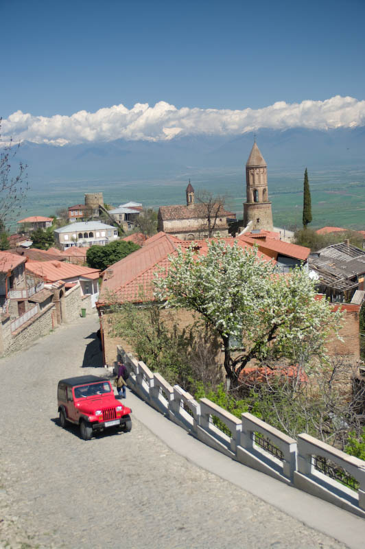

l’autostop en Géorgie: attention aux mariages
A quelques reprises nous avons du effectuer quelques aller-retour en auto-stop. Ces quelques épisodes nous ont confronté à un phénomène culturel assez étrange et dangereux.
Lorsque les beaux jours reviennent et que les mariages deviennent de plus en plus fréquent, il est assez courant que les célébrations se fassent dans des petites villes ou villages où vivent la famille. Les invités proviennent alors de tout le pays pour assister aux festivités qui peuvent durer plusieurs jours. Si l’occasion se présente, les gens qui se rendront à un mariage ne manqueront pas de vous proposer de vous joindre à eux pour prendre part à la fête en tant qu’invité surprise.

Le principal problème réside dans l’habitude qu’on ces invités, plus spécialement les jeunes, à improviser des courses de voiture entre la ville d’où ils partent et l’endroit où ils se rendent. Les exemples de conduite dangereuse se succèdent : dépassement par la droite, queues de poisson, excès de vitesse… Aucune règle de conduite ne semble respectée. Il arrive d’ailleurs que ces chauffards aient entre leurs mains des voitures puissantes et relativement récentes, mais les routes géorgiennes sont très souvent dans un état délabré et les véhicules en circulation dans les régions rurales ne passeraient pas le moindre contrôle technique en Europe.
Il nous parait évident que ce type de comportement est des plus dangereux, mais pour ces conducteurs ils s’agit juste d’une activité ludique. Si les bolides en course croisent une voiture de police une course poursuite s’engage alors mais bien souvent la supériorité en puissance de leurs voitures, leur permettent de distancer sans encombre, une police qui ne semble de toute manière pas très résolue à les arrêter .
Faites attention donc lorsque vous faites de l’auto-stop. Vérifiez que la personne qui accepte de vous prendre ne voyage pas en convoie, et si c’est le cas, essayez de demander s’ils vont à un mariage. Si c’est toujours le cas, essayer d’exprimer clairement votre souhait de ne pas être embarquer dans ce type de course. Il n’est cependant absolument pas certain que votre requête soit prise en compte car il semble qu’il y ai dans ces courses une notion de défi, un besoin d’affirmer sa virilité ou quelque-chose du genre.
Les autres passagers de la voiture vous assureront que leur chauffeur est une excellent pilote et ne manqueront pas une occasion de narguer l’équipage de la voiture adverse lorsqu’ils rouleront côte à côte. Nous sommes monté à deux reprises dans des véhicules dont les conducteurs s’adonnèrent à ce genre d’activité. Aux deux reprises nous avons réellement craint pour notre vie.